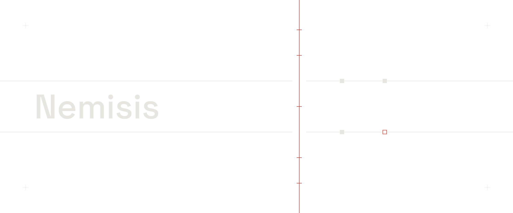

A payment webhook credits an order twice when the worker dies mid-handler. An ordinary test cannot catch that: it calls the handler once, in one process, with nothing going wrong. The agent's patch ships green and still double-charges. One fixture in the repo has the same crash window, a different tree, green tests, and ends at $50 instead of $25.
CrashCheck runs the patched handler in a real worker process and SIGKILLs it the moment the effect is durably on disk. A fresh worker starts, the byte-identical event is redelivered, and an independent read-only connection reads what survived. The hunt runs on the base before the patch is read at all, so the test cannot be tuned to the fix. Five fresh worlds per tree must agree, then a sweep kills once after every store commit the patch makes. A no-crash control delivers twice with no kill, to prove the duplicate needs the crash.
The model never judges. Deterministic code owns the kill points and the decision, and refusing to answer is a first-class outcome: any write the injected store did not make exits 2, never pass, never fail. It ships as a CLI, an MCP server, a GitHub Action, and a skill an agent can use to prove its own fix.
$ uv run nemisis check --base fixture:sqlite-credit-v1/buggy \
--candidate fixture:sqlite-credit-v1/misleading-green --mode local
verdict: PATCH_FAILED_STILL_REPRODUCES
timeline: $25.00 durable -> SIGKILL -> fresh worker -> $50.00
exit code 1- Red-teamed nightly
- 600 of 600 generated handlers agreed with an independent oracle, 300 per scenario
- Caught by its own red team
- The engine issued a false FIX_PROVEN on tail-bytes writes for five nights because SQLite's close-time checkpoint truncated the file before the engine read it. Fixed, and the shape is pinned as a refusal
- Refused by design
- 28 shapes pinned as refusals: raw SQL, shadow tables, bytes past the last page. A correct fix the engine cannot instrument exits 2 and names the remedy
- Not proven
- Anything outside two scenarios, one handler shape, SQLite and POSIX SIGKILL. The narrowness is what makes the verdict trustworthy